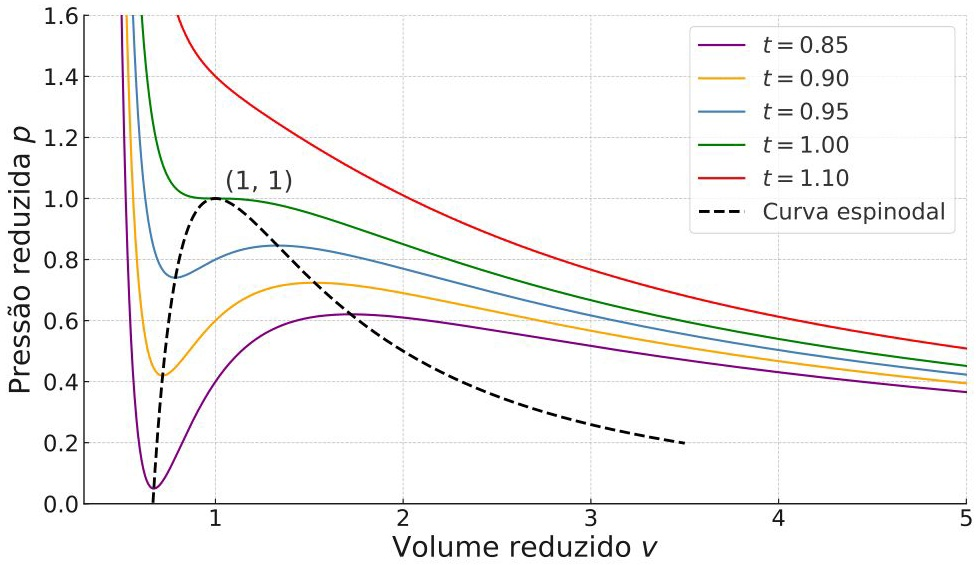

- t > 1: As isotermas são monotonicamente decrescentes, assemelhando-se ao gás ideal.
- t = 1: Ponto crítico com inflexão horizontal em \((v, p) = (1, 1)\).
- t < 1: Surge um máximo e um mínimo local (região de instabilidade mecânica).
Isotermas reduzidas, regiões instáveis e a curva espinodal nas transições líquido-vapor.

Isotermas para \(t=0.85\) a \(1.10\). A curva espinodal (tracejada) delimita a região onde \(\partial p / \partial v > 0\). O ponto crítico está marcado em \((1,1)\).
Note que abaixo da crítica, as curvas cruzam a região espinodal, onde o sistema não pode existir como uma fase homogênea estável.Use o simulador interativo para explorar as isotermas de van der Waals, a região espinodal, o ponto crítico e a estabilidade mecânica em variáveis reduzidas.
Abrir simulador